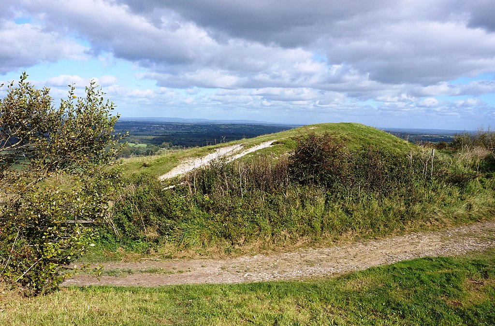
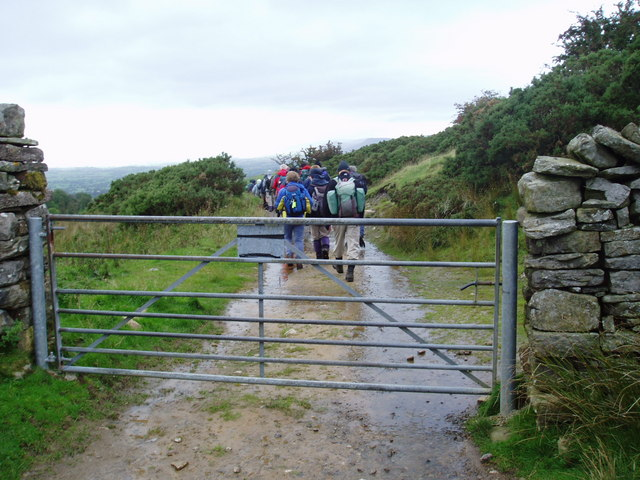
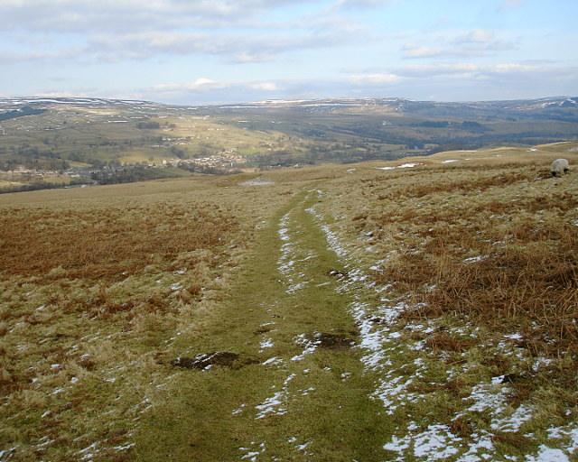
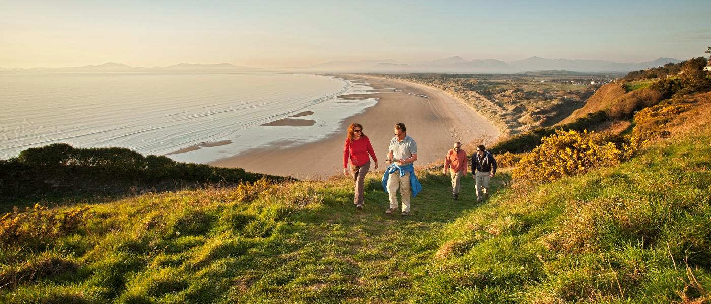

Here is our up to date information about the different walks that are available.
The south downs way is a long distance footpath and bridgeway that is available running in southern england. The length of this walk is 160km. the path is well defined and passes through ancient forests, small villagers, and rolling countryside.
The coast to coast walk is a 293km available unofficial and most unsignposted long-distance foot path in nothern england. it passes through three contrasting national parks:the lake district national park, the yorkshire dales national park, and the north york moors national park.
The pennie way walk is a national trail available in england with a small section in scotland.The trail stretches 431km from edale, in the northern derbyshire peak district, north through the yorkshire dales and northumberland national park and ends at kirk yetholm, just inside the scotish border.
The wales coast path walk is an available designated footpath which follows, or runs, close to, the coastline of wales. The path runs through national nature reserves which covers 1,400km.(fun fact), this path is the longest path of our walk services. Also, a man broke the world record for shortest time in walking through.
